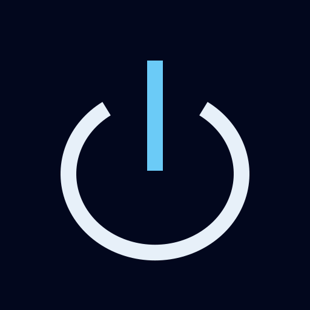
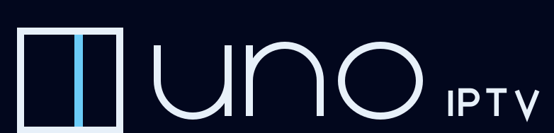
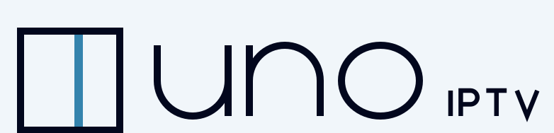
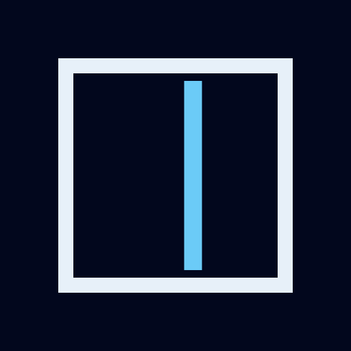
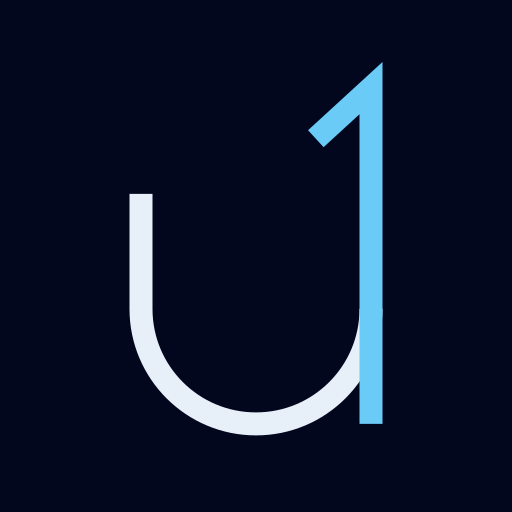

Logo Uno IPTV
Três direções no sistema do site: traço fino e largo, cantos retos, um azul de sinal. Escolha uma e eu aplico no site, no favicon e no schema.
Liga
O o de uno vira o símbolo de ligar: a TV acende e o 1 de uno aparece no traço azul.

Agora
Uma tela quadrada com a linha do agora, a mesma do guia de programação do site.



Um
A haste do u vira o número 1, em azul: uno, um, o único que você precisa assinar.
